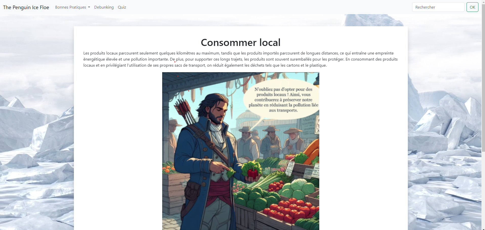

Ce projet a été fait lors de la Nuit de l'info 2023.
Ce projet consistait à réaliser un site qui permet de prendre conscience sur les enjeux du climat à l'heure
actuelle,
il a été codé sous PHP, HTML et CSS et on a utilisé MySQL pour la base de
données. Et nous avons utilisé la framework bootscrap pour nous faciliter la tâche
C'était du 7 au 9 décembre 2023 nous étions un groupe de 7 à avoir travaillé sur ce projet et nous avons
passé environ 16 heures sur ce projet. Malgré le peu de temps que nous disposions, nous avons pu mettre à bien
ce projet notamment parce que
on faisait des mises au point régulières.
Pendant le projet, j'ai pu m'occuper de la section bonnes pratiques.pour réaliser ma tâche, j'ai utilisé PHP et MySQL, ça permet de générer une seule page html au lieu de plusieurs pages, le texte est quant à lui généré avec la base de données.
Voici un exemple d'une page du site.
